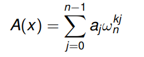

Overview
- How to multiply two large polynomials (and therefore integers) using
Fourier transforms - How to implement the fast Fourier transform (FFT) from scratch
I By doing this we will reduce the time complexity of polynomial
multiplication from O(n^2) to O(n log n).
I Perhaps more importantly, you will also learn one of the most useful
and widely deployed computational tools in science and engineering.
Polynomials (1)
A degree n − 1 polynomial in x can be seen as a function:
Any integer greater than the degree of a polynomial is a degree-bound of that polynomial.
The polynomial A in x is:

The values ai are the coefficients, the degree is n − 1 and n, for example, is a degree-bound
We can express any integer as a kind of polynomial by setting x to some base, say for decimal numbers:
Polynomials (2)
-
The variable x allows us to evaluate the polynomial at a point:
-
Evaluation just means plugging a value into the variable x.
-
For example A(3) = a~0~ · 3^0^ + a~1~ · 3^1^ + a~2~ · 3^2^· · · + a~n−1~3^n−1^.
-
A fast way to evaluate a polynomial is using Horner’s Rule.
-
Instead of computing all the terms individually, we do
A(3) = a~0~ + 3 · (a~1~ + 3 · (a~2~ + · · · + 3 · (a~n−1~)))
-
This method requires O(n) operations:
-
1 | EVALUATE-HORNER(A, n, x) |
Example:
Consider A(x) = 2 + 3x + 1 * x^2
We can evaluate this as A(x) = 2 + x(3 + 1 * x)
Coefficient Based Polynomial Arithmetic
Once we have our polynomial representations, we might want to do some arithmetic with them.
For a coefficient representation, the addition C = A + B constructs C as the vector:
(a0 + b0, a1 + b1, a2 + b2, . . . , an−1 + bn−1).
Strictly speaking, A and B should have the same length but in practice we can just pad with zero coefficients to make this so.
Point Value Representation of Polynomials
Polynomial Addition
Fact: Given n points (xi, yi), with all xi distinct, there is a unique polynomial A(x) of degree-bound n such that yk = A(xk ) for k = 0, 1, . . . , n − 1.
- For a point-value representation, the addition C = A + B constructs C as: {(x0, y0 + z0),(x1, y1 + z1),(x2, y2 + z2), . . . ,(xn−1, yn−1 + zn−1)} where xi is a point, yi = A(xi) and zi = B(xi).
- Note that the two point-value representations must use the same evaluation points.
- Both these operations are O(n) in terms of the time they take.
Polynomial Multiplication
Computing a polynomial multiplication, sometimes called convolution, is a little bit harder than addition.
For a coefficient representation, the product C = A × B can be calculated with school-book long multiplication:
To do now: multiply 7x^2 − 10x + 9 and 2x^2 + 4x − 5
For a point-value representation, C = A × B is a bit easier:
{(x0, y0 · z0),(x1, y1 · z1),(x2, y2 · z2), . . . ,(xn−1, yn−1 · zn−1)} where xi is a point, yi = A(xi) and zi = B(xi).
The first method is O(n^2), the second method is O(n) !
Actually, we can do a bit better than the O(n^2) case using the divide and conquer method due to Karatsuba.
This gives an algorithm with time complexity: O(n^log2 3) = O(n^1.59), which is better than our previous method which took O(n^2) operations.
The problem is that even this is too slow … we know that using a point-value representation is O(n) !
The Main Idea
Develop two fast algorithms that for any polynomial:
and a preselected set x0, x1, . . . , xn−1 of numbers (to be specified before we know which polynomials we will have)
Evaluate A(x0), A(x1), . . . , A(xn−1) (evaluate)
Given A(x0), A(x1), . . . , A(xn−1), reconstruct A’s coefficients
a0, a1, . . . am−1 (interpolate)
The main steps for fast multiplication of two polynomials A and B each of
degree n are:
- Double degree-bound: Create coefficient representations of A(x) and B(x) as degree-bound 2n polynomials by adding n high-order zero coefficients to each
- Evaluate: Compute point-value representations of A(x) and B(x) of length 2n through two applications of the FFT of order 2n.
- Pointwise multiply: Compute a point-value representation of C(x) = A(x)B(x) by multiplying the values pointwise
- Interpolate: Create a coefficient representation of C(x) through a single application of the inverse FFT.
The first and third steps are easy to perform in O(n) time. The claim is that if we evaluate at the complex roots of unity then we can perform steps 2 and 4 in O(n log n) time.
Evaluation at Roots of Unity
These special points are chosen to be the N-th Complex Roots of Unity:
That is, the values ωN = e^2πij/N, for j = 0, 1, . . . , N − 1.
Say we are evaluating at N points so we take the N-th complex roots of
unity ωN .
Discrete Fourier Transform
We want to evaluate a polynomial A at the n roots of unity.
Therefore we evaluate
for every k = 0, 1, . . . , n − 1.

This vector y = (y0, . . . , yn−1) is the Discrete Fourier Transform (DFT)
of the coefficient vector a = (a0, a1, . . . , an−1).
example:
The discrete Fourier transform of 0 + 0x + x^2 − x^3 is 0, −1 + i, 2, −1 − i
Lemma:
The Cancellation Lemma:
The Halving Lemma: If N > 0 is even then the squares of the N complex
N-th roots of unity are the N/2 complex N/2-th roots of unity.
Fast Fourier Transform
-
The basic idea of the Fast Fourier Transform (FFT), a fast version of the DFT, is define two new polynomials:
 and use these to divide and conquer the problem.
and use these to divide and conquer the problem. -
From the above, we have:
-
The Halving Lemma tells us there are only N/2 complex N/2-th roots
of unity, each one must occur twice !
The running time of the FFT can therefore be expressed as T(n) = 2T(n/2) + Θ(n) = Θ(n log n)
 支付宝打赏
支付宝打赏
 微信打赏
微信打赏
保存图片 扫一扫 好人平安